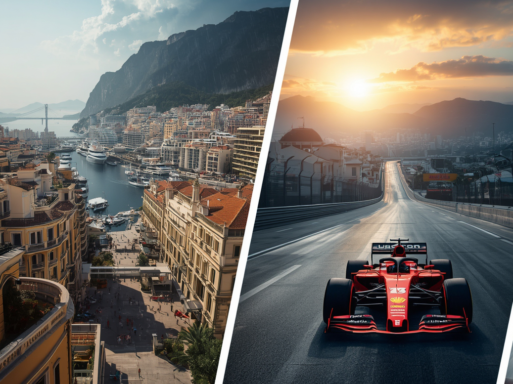
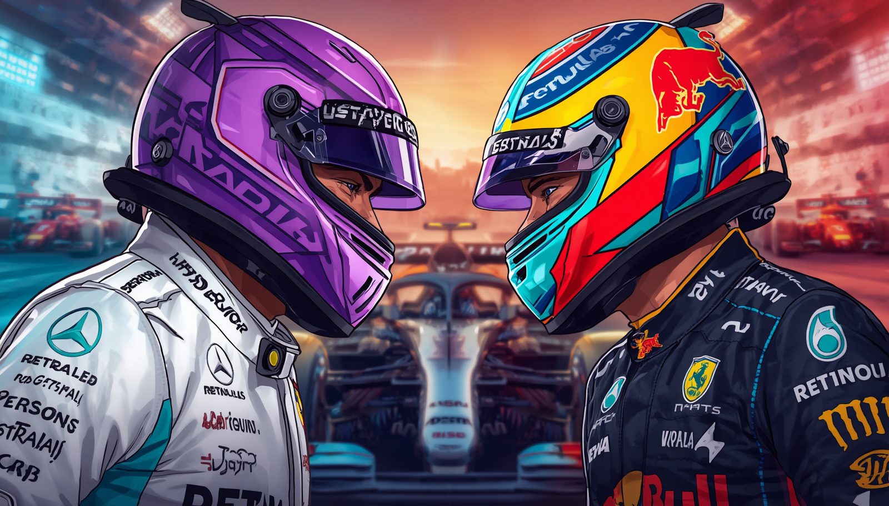
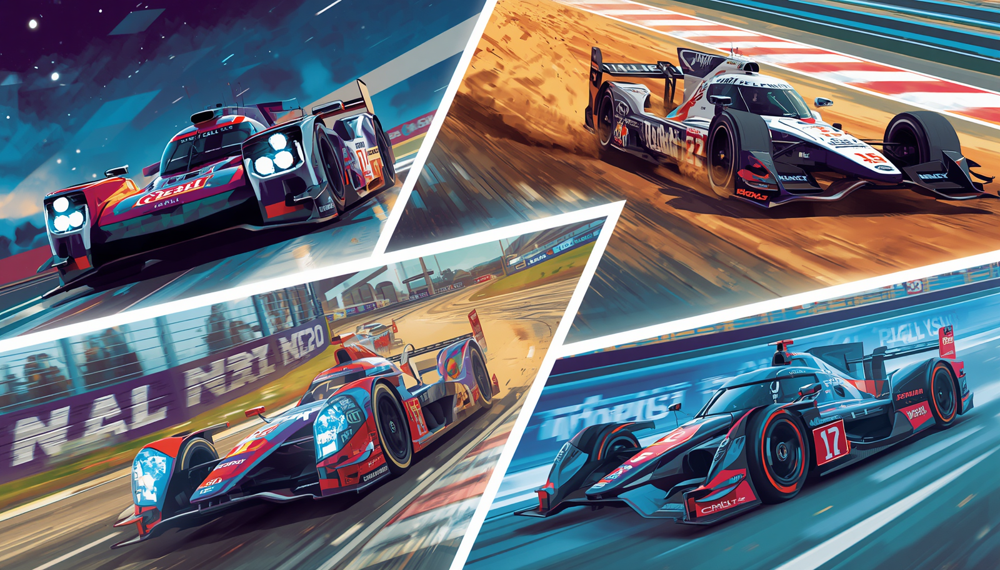

dados e curiosidades da maior competição de automobilismo do mundo
Evolução dos Carros (Das "Baratas" aos Monstros de Fibra de Carbono).
Se você olhar para um carro de Fórmula 1 da década de 1950 e para um atual, vai achar que um deles veio do espaço. Nos primórdios da categoria, os pilotos corriam a mais de $200\text{ km/h}$ em carros que pareciam charutos com rodas, usando capacetes que lembravam toucas de banho e praticamente nenhuma proteção. Era o puro suco da coragem (e da loucura).Corte para o presente: os carros atuais são verdadeiros caças de combate terrestre feitos de fibra de carbonos leves, ultra-resistentes e entupidos de sensores. Eles são desenhados para grudar no chão; em teoria, a aerodinâmica atual é tão bizarra que, se você pilotasse um F1 moderno de cabeça para baixo no teto de um túnel em alta velocidade, ele continuaria grudado. Só não recomendamos testar isso no mundo real.

Circuitos Lendários (Onde a História é Escrita).
calendário da Fórmula 1 viaja o mundo todo, mas existem pistas que têm alma. Correr em Mônaco, por exemplo, é o equivalente a pilotar um caça dentro da sua sala de estar. As ruas são tão estreitas que os pilotos raspam os muros a cada curva, provando que o glamour do principado anda de mãos dadas com a adrenalina pura. Do outro lado do espectro, temos o templo da velocidade em Monza, na Itália, onde os motores gritam no limite nas retas infinitas. E, claro, não podemos esquecer de Interlagos, aqui no Brasil. Com seu traçado icônico no sentido anti-horário e o clima completamente maluco que vai de "sol de rachar" a "dilúvio universal" em três minutos, São Paulo sempre entrega corridas que fazem o coração do torcedor errar as batidas.

Os Grandes Rivais (Duelos que Marcaram Épocas)
é legal, mas uma rivalidade feroz é o que realmente acende o espetáculo. A Fórmula 1 é movida pelo drama de dois pilotos disputando o mesmo centímetro de asfalto. O maior exemplo disso foi o choque de titãs entre Ayrton Senna e Alain Prost no final dos anos 80 e início dos 90. Era o talento puro e agressivo do brasileiro contra a frieza calculista do "Professor" francês, resultando em batidas polêmicas e campeonatos decididos na caixa de brita. Mais recentemente, vimos Lewis Hamilton e Max Verstappen levarem a disputa ao limite absoluto em 2021, com direito a carros empilhados e uma decisão na última volta da última corrida. Na F1, o seu primeiro rival é sempre o seu companheiro de equipe, e o segundo é qualquer um que ousar tentar te ultrapassar.

Além da F1 (O Universo de Outras Categorias de Corrida)
A Fórmula 1 pode ser a "Série A" do automobilismo, mas o mundo do esporte a motor é gigantesco e cheio de outras loucuras sobre rodas. Se você acha uma corrida de duas horas cansativa, imagine as 24 Horas de Le Mans, onde os pilotos correm um dia inteiro sem parar (revezando o carro, claro), testando os limites humanos e mecânicos na calada da noite. Se prefere lama e carros voando de verdade, o Rally (WRC) mostra pilotos fazendo curvas de lado em estradas de gelo ou penhascos que fariam qualquer GPS entrar em pânico. E ainda temos a IndyCar americana, com seus ovais de alta velocidade, e a Fórmula E, provando que os motores elétricos também sabem acelerar e fazer barulho de nave espacial. Há velocidade para todos os gostos!
